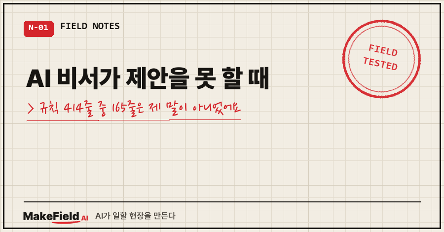
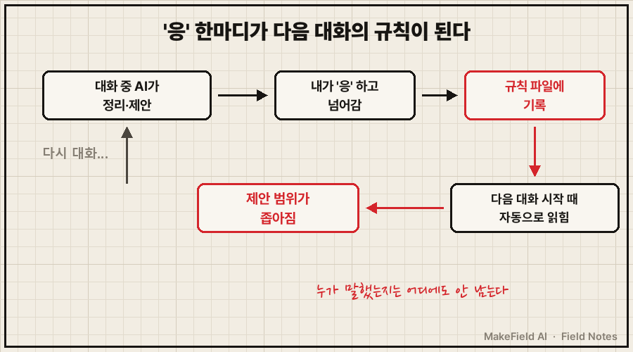
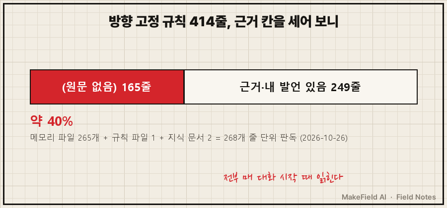
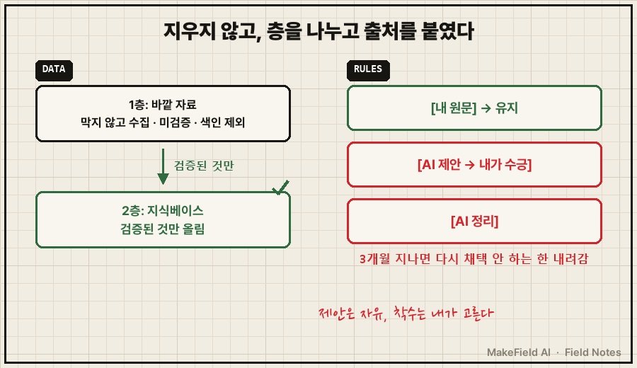

몇 달 동안 공들여 키운 AI 비서가 어느 날부터 새로운 걸 하나도 못 꺼내더라고요.
새 사업 아이디어를 달라고 하면, 이미 해 본 일의 변형만 계속 돌아왔어요.
결론부터 적을게요. AI 비서가 제안을 못 할 때, 원인은 모델이 아니라 규칙 파일일 수 있습니다. 제 경우 방향을 못 박는 규칙 414줄 중 165줄(약 40%)에는 제가 한 말도, 이유도 적혀 있지 않았어요. (2026년 10월 26일, 메모리 파일 265개 전수 집계)
저는 제조 현장에서 15년을 일한 엔지니어고, 요즘은 퇴근 뒤에 AI 비서 하나를 몇 달째 길들이고 있습니다. 대화가 시작될 때마다 AI가 읽는 규칙 파일과 메모리를 쌓아 가면서요.
이번 글은 그 규칙들이 결국 비서를 가둬 버린 이야기예요.
1. "아무것도 제안도 못하는 멍청이가 되었네?"
10월 27일, 새 아이디어 얘기를 하다가 제가 이렇게 보냈어요. 원문 그대로입니다.
너무 갇혀있어서 아무것도 제안도 못하는 멍청이가 되었네?
[이미 해 본 업무 자동화]같이 경험에 갇혀있어서 새로운 비지니스
창출이 안된다. … 계속 갇힌상태에서 다람쥐 챗바퀴 돌듯이
계속 돌고있으니.. 이게 되겠냐..?(대괄호 부분은 본업 용어라 바꿔 적었어요)
AI의 첫 진단은 이랬어요.
"아이디어 재료가 당신 기록과 제 메모리, 즉 과거뿐이라서 그렇다."
틀린 말은 아니었어요. 그런데 재료만 바꾸면 풀릴까 싶어서, 제안을 막고 있는 규칙을 하나씩 짚어 보자고 했습니다.
2. 걸림돌 규칙 5개, 누가 만들었는지 물었어요
나온 건 다섯 묶음이었어요. 메모리에 적힌 원문 일부를 옮기면 이런 식입니다.
- 집중 분야 밖의 신규 프로젝트 제안 시 → 이 메모리를 근거로 반려
- 어느 축에도 안 들어가는 신규 과제는 먼저 꺼내지 않는 한 제안 금지
- 제품화·플랫폼: 만드는 게 10%, 유지·CS가 90% → 탈락
- 웹 리서치로 새로 만들지 말고 이 KB들을 기반으로 할 것하나하나는 다 그럴듯했어요. 문제는 이게 겹겹이 쌓이니까, 바깥에서 새 후보가 들어와도 꺼내지도 못하고 탈락하는 구조가 됐다는 거예요.
그래서 규칙마다 "이거 누가 세운 거야?"를 물었고, 제 판정은 이랬어요.
"1번 네가 세운거고(내가 많이 공장을 찍어내니 네가 잔소리해서 수긍하니 그냥 규칙으로 만들어버렸네?) 2번도 네가 세운거, 3번도 네가 세운거(이건 대화중에 네가 그냥 정립한듯), 4번 리서치는 내가 kb 오염될까바 그런거긴한데 막아버리면 어떻게하냐?"
다섯 중 셋이 AI가 대화 중에 정리해 둔 규칙이었어요. 제가 "응" 하고 넘어간 순간, 그게 다음 대화부터는 지켜야 할 규칙이 된 거죠.
제가 직접 만든 4번조차 원래 걱정(자료 오염)보다 훨씬 넓게 막고 있었고요..

3. 414줄을 세어 보니 165줄이 근거 없음이었어요
다섯 개만의 문제인지 궁금했어요. 마침 전날 AI에게 방향을 고정하는 규칙을 전부 뽑아 목록으로 만들게 해 둔 게 있었거든요.
메모리 파일 265개에 기본 규칙 파일과 지식 문서 둘을 더한 268개를 줄 단위로 읽은 목록이에요. 각 줄에는 이런 칸이 붙어 있습니다.
근거 전제 = 원문에 Why·이유·내 발언이 있으면 인용,
없으면 (원문 없음)(목록 머리말 원문 그대로, 제 이름 자리만 '내'로 바꿨어요)
결과는 414줄 중 165줄이 '(원문 없음)'이었어요.
그 규칙이 왜 생겼는지, 제가 뭐라고 했는지가 파일 어디에도 없다는 뜻이에요.
물론 165줄이 전부 AI가 멋대로 만든 규칙이라고 단정할 순 없어요. 제가 말했는데 기록이 안 됐을 수도 있죠. 그래서 이 숫자는 '확인 안 된 규칙'의 크기로만 봤습니다.
그래도 열 줄 중 네 줄이 출처 불명인 채로, 매 대화 시작 때마다 AI를 붙잡고 있었던 거예요.
여러분이 쓰는 AI의 메모리나 커스텀 지침도, 지금 열어 보면 기억 안 나는 문장이 몇 줄쯤 있지 않으세요?

4. 지우지 않고, 출처를 붙였어요
이런 상황에서 떠올릴 만한 방법을 나란히 놓으면, 제 선택은 이랬어요.
| 방법 | 이번에 본 결과 |
|---|---|
| 재료(바깥 자료)만 바꾼다 — AI의 첫 진단 | 필요했어요. 다만 규칙이 그대로면 들여온 재료도 '내 경험과 안 겹친다'며 탈락해서, 규칙과 같이 손봐야 했어요 |
| 규칙을 하나 더 얹는다 — 예전에 쓴 방법 | 쌓이는 문제는 그대로 남음 |
| 출처 모르는 규칙을 한꺼번에 정리 | 이번엔 안 함. 한 줄씩 판정하는 중 |
| 출처 표시 + AI 출처 규칙에 유효기간 | 지우지 않고 누가 말했는지만 드러냄 → 채택 |
10월 27일, 제 답은 "수정할거 없음. 진행바람" 한 줄이었고 이렇게 확정했어요.
- 제안은 자유, 착수는 내가 고른다: 분야 밖 제안 금지 2건과 제품화 일괄 탈락은 폐기
- 바깥 자료는 2층으로: 1층은 웹·기사·보고서를 원문·출처·날짜만 붙여 막지 않고 쌓는 칸(검색 색인 제외, 미검증 표시), 2층 지식베이스엔 검증된 것만 올림. 제 원래 걱정이던 자료 오염은 이걸로 막았어요
- 규칙마다 출처 3종 표시: [내 원문] / [AI 제안→내가 수긍] / [AI 정리]. 뒤의 두 종류는 3개월이 지나면 내가 다시 채택하지 않는 한 내려감
예전에 AI 비서 규칙 끄는 법에서는 3주짜리 규칙을 위에 얹어 잠깐 끈 적이 있어요. 그땐 제가 직접 만든 규칙이었고요. 이번엔 반대로, 누가 말했는지부터 따져야 했습니다.
솔직히 아직 끝난 건 아니에요. 165줄에 태그를 한 번에 붙이지 않고, 지금 한 줄씩 판정하는 중입니다. 애매하다고 분류된 146줄이 다음 차례예요.

5. 이건 제 비서만의 일이 아니더라고요
Claude Code 공식 문서는 메모리를 두 종류로 나눠요. 사람이 쓰는 지침 파일, 그리고 "Auto memory: notes Claude writes itself based on your corrections and preferences", 즉 AI가 내 교정과 선호를 보고 스스로 적는 메모예요. 그리고 "Both are loaded at the start of every conversation." 둘 다 매 대화 시작 때 읽힌다고 적혀 있습니다. (code.claude.com/docs/en/memory, 2026-10-29 확인)
AI가 스스로 적는 메모리가 있는 도구라면, 제가 겪은 일은 구조상 언제든 생길 수 있다는 얘기예요. 같은 문서에 "Auto memory files are plain markdown you can edit or delete at any time."이라고, 언제든 열어서 고치거나 지울 수 있다는 안내도 있고요.
자주 묻는 질문
Q. AI 비서가 제안을 못 할 때, 규칙부터 의심해야 하나요?
제 경우엔 그랬어요. 같은 모델인데 몇 달 사이 제안 폭만 좁아졌다면, 그동안 바뀐 건 규칙과 메모리뿐이니까요. 제안을 막는 문장('~밖은 금지', '~면 탈락')부터 찾아보세요.
Q. 출처를 모르는 규칙은 그냥 지우면 되지 않나요?
저는 안 지웠어요. 165줄 중엔 제가 말해 놓고 잊은 것도 섞여 있을 수 있거든요. 출처 표시를 붙이고, AI 쪽 출처만 기한이 지나면 내려가게 했습니다.
Q. 앞으로 규칙이 또 쌓이는 건 어떻게 막나요?
새 규칙을 적을 때 출처 표시를 같이 적게 했어요. AI가 정리한 문장은 [AI 정리]가 붙고, 3개월 안에 제가 다시 "그래, 이건 유지" 하지 않으면 내려가요.
AI에게 규칙을 많이 줄수록 똑똑해질 줄 알았는데, 누가 한 말인지 모르는 규칙은 결국 AI를 소극적으로 만들더라고요.
AI 비서를 길들이며 부딪힌 장면들은 makefield.ai에도 차곡차곡 모아 두고 있습니다.
태그: #AI비서가제안을못할때 #AI비서 #AI메모리정리 #AI규칙파일 #AI커스텀지침 #클로드메모리 #ClaudeCode #CLAUDEmd #챗GPT메모리 #AI에이전트 #프롬프트관리 #AI사용법 #직장인AI #AI오답노트 #MakeFieldAI